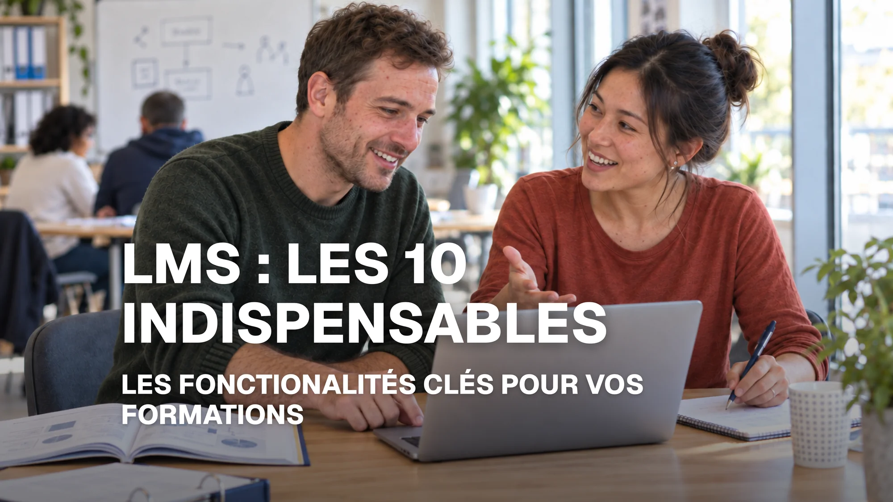

Les 10 fonctionnalités indispensables d’un LMS
Découvrez les fonctionnalités essentielles d’un LMS pour choisir une plateforme adaptée aux besoins de votre organisme de formation.
- e‑learning
- Formation
- Information
- LMS

Les usages de la formation évoluent rapidement. Les apprenants souhaitent pouvoir se former où qu’ils soient, les équipes pédagogiques cherchent à gagner en efficacité et les organismes de formation tout comme les grands comptes doivent gérer des parcours toujours plus variés et personnalisés.
Face à ces nouveaux besoins, les LMS ont eux aussi évolué. Ils ne servent plus uniquement à héberger et diffuser des contenus : ils deviennent de véritables environnements de formation, capables d’accompagner aussi bien les équipes pédagogiques que les apprenants tout au long de leur parcours.
Responsive design, outils auteur, intelligence artificielle, gamification, personnalisation… certaines fonctionnalités sont aujourd’hui devenues essentielles pour répondre à ces nouveaux usages.
Voici les 10 fonctionnalités qui font réellement la différence dans un LMS en 2026.
1. Un LMS responsive pour se former partout et sur tous les appareils
Aujourd’hui, les apprenants et les collaborateurs ne se connectent plus uniquement depuis un ordinateur. Un LMS doit offrir une expérience fluide sur smartphone, tablette ou ordinateur portable.
Mais une plateforme responsive ne suffit pas : les contenus de formation doivent l’être également. Modules, vidéos, quiz ou activités doivent s’adapter automatiquement à la taille de l’écran pour garantir une navigation et une lecture confortables sur tous les appareils.
L’apprenant peut ainsi suivre sa formation à tout moment et où qu’il soit, sans dégradation de l’expérience, quel que soit le support utilisé.
2. Des outils auteur intégrés pour créer facilement ses formations
Un LMS doté d’outils auteur intégrés permet aux formateurs de concevoir leurs contenus pédagogiques directement depuis la plateforme, sans avoir à multiplier les applications.
Contenus de formation, quiz, évaluations ou activités interactives peuvent ainsi être créés, modifiés et enrichis facilement au même endroit. Les équipes pédagogiques gagnent en autonomie et peuvent faire évoluer rapidement leurs formations en fonction des besoins.
Cette intégration permet ainsi de simplifier la création de contenus, de gagner du temps et de proposer des formations toujours plus dynamiques et engageantes.
3. Des parcours d’apprentissage personnalisés pour s’adapter à chaque apprenant
Tous les apprenants n’ont pas les mêmes connaissances, objectifs ou le même rythme d’apprentissage. Un LMS doit donc permettre de proposer des parcours adaptés à chaque profil.
Les contenus et activités peuvent évoluer selon le niveau, les résultats ou la progression de l’apprenant : ajout de ressources complémentaires, déblocage de nouveaux modules ou adaptation des activités proposées.
Cette personnalisation permet d’offrir une formation plus pertinente, engageante et adaptée aux besoins de chacun.
4. L’intelligence artificielle pour enrichir l’expérience d’apprentissage
Créer des contenus, préparer des évaluations, répondre aux questions des apprenants… les équipes pédagogiques consacrent beaucoup de temps à des tâches qui peuvent être facilitées par l’intelligence artificielle.
Intégrée directement au LMS, l’IA peut devenir un véritable assistant : elle aide à créer ou enrichir des contenus, à générer des quiz, à proposer des ressources ou encore à accompagner les apprenants lorsqu’ils ont besoin d’une explication.
L’objectif n’est pas de remplacer le formateur, mais de lui faire gagner du temps tout en offrant aux apprenants un accompagnement plus réactif et personnalisé, disponible au moment où ils en ont besoin.
5. Une plateforme multilingue pour former sans frontières
Former des apprenants de différentes nationalités peut rapidement devenir complexe lorsque la langue de la plateforme constitue un frein à son utilisation.
Un LMS multilingue permet à chaque utilisateur de naviguer dans un environnement adapté à sa langue. Un organisme de formation peut ainsi s’adresser à des publics internationaux, tandis qu’une entreprise peut déployer plus facilement une stratégie de formation commune auprès de collaborateurs situés dans différents pays.
Le multilingue facilite ainsi l’accès à la formation et le déploiement de parcours à grande échelle, au‑delà des frontières linguistiques.
6. Un suivi intelligent pour obtenir la bonne information au bon moment
Face à des milliers d’apprenants, il devient difficile pour les équipes pédagogiques de repérer rapidement ceux qui progressent, décrochent ou rencontrent une difficulté.
Un LMS doit donc aller au‑delà de la simple collecte de données et être capable de faire remonter l’information pertinente au moment où elle devient utile : baisse d’activité, difficulté rencontrée, objectif atteint ou étape importante du parcours.
Les équipes peuvent ainsi intervenir au bon moment, mieux accompagner les apprenants et piloter leurs formations de manière plus réactive, sans avoir à chercher constamment l’information.
7. Une plateforme personnalisable à l’image de votre organisme de formation
Chaque organisme de formation ou entreprise possède son identité, son organisation et son propre vocabulaire. Une plateforme trop standardisée peut rapidement imposer des usages qui ne correspondent pas à son fonctionnement.
Un LMS personnalisable doit permettre d’adapter l’aspect graphique — logo, couleurs, identité visuelle — mais aussi les contenus et l’organisation de la plateforme : nom des champs, terminologie utilisée, espaces, profils ou informations affichées.
L’objectif est que le LMS s’adapte à l’organisation et non l’inverse, afin de proposer aux équipes comme aux apprenants un environnement cohérent avec leurs usages et leur contexte.
8. Gestion des évaluations pour mesurer les acquis et développer les compétences
Suivre une formation ne signifie pas forcément que les connaissances ou les compétences sont acquises. L’enjeu est donc de pouvoir mesurer la progression réelle de chaque apprenant tout au long de son parcours.
Quiz, tests de positionnement, évaluations ou validations permettent d’identifier ce qui est maîtrisé, mais aussi les notions qui nécessitent encore d’être travaillées.
Le LMS permet ainsi aux équipes pédagogiques de mieux suivre les acquis, d’ajuster les parcours lorsque cela est nécessaire et de s’assurer que la formation atteint réellement ses objectifs pédagogiques.
9. Une interopérabilité pour connecter le LMS à votre écosystème
Multiplier les outils peut rapidement compliquer le quotidien des équipes : données dispersées, doubles saisies, connexions multiples ou informations difficiles à synchroniser.
Cette problématique devient encore plus importante dans les grandes organisations disposant d’un système d’information déjà structuré.
Un LMS interopérable doit pouvoir communiquer avec les solutions déjà utilisées grâce à des standards et à technologies comme SCORM, les API ou le SSO, mais aussi s’intégrer plus largement à l’écosystème numérique de l’organisation.
L’objectif est de faciliter la circulation des informations et d’éviter que le LMS ne devienne un outil isolé. Pour les entreprises et les grands comptes, la capacité du LMS à s’intégrer au système d’information existant devient ainsi un véritable critère de choix.
10. Une gestion multimodale pour réunir toutes les modalités de formation
Présentiel, e‑learning, classe virtuelle… lorsque les modalités se multiplient, l’organisation et le suivi des parcours peuvent rapidement devenir complexes, aussi bien pour les équipes pédagogiques que pour les apprenants.
Un LMS multimodal permet de réunir ces différents formats au sein d’un même parcours et de centraliser leur gestion sur une seule plateforme.
Les équipes bénéficient ainsi d’une vision globale de la formation, tandis que les apprenants retrouvent simplement leurs différentes activités, quel que soit leur mode d’apprentissage.
Les bonnes fonctionnalités au service de la formation
Face à des LMS qui proposent toujours plus de fonctionnalités, il peut être difficile de distinguer celles qui apportent une réelle valeur au quotidien de celles qui resteront finalement peu utilisées.
L’enjeu n’est donc pas de choisir la plateforme qui en propose le plus, mais celle dont les fonctionnalités répondent réellement aux besoins des équipes pédagogiques et des apprenants. Chaque outil doit avoir un objectif concret : simplifier, accompagner, engager ou faire gagner du temps.
Avant de choisir son LMS, il est donc essentiel de partir de ses propres usages et objectifs. Car la technologie n’est finalement qu’un moyen : le meilleur LMS est celui qui facilite la formation sans jamais la compliquer.
#LMS